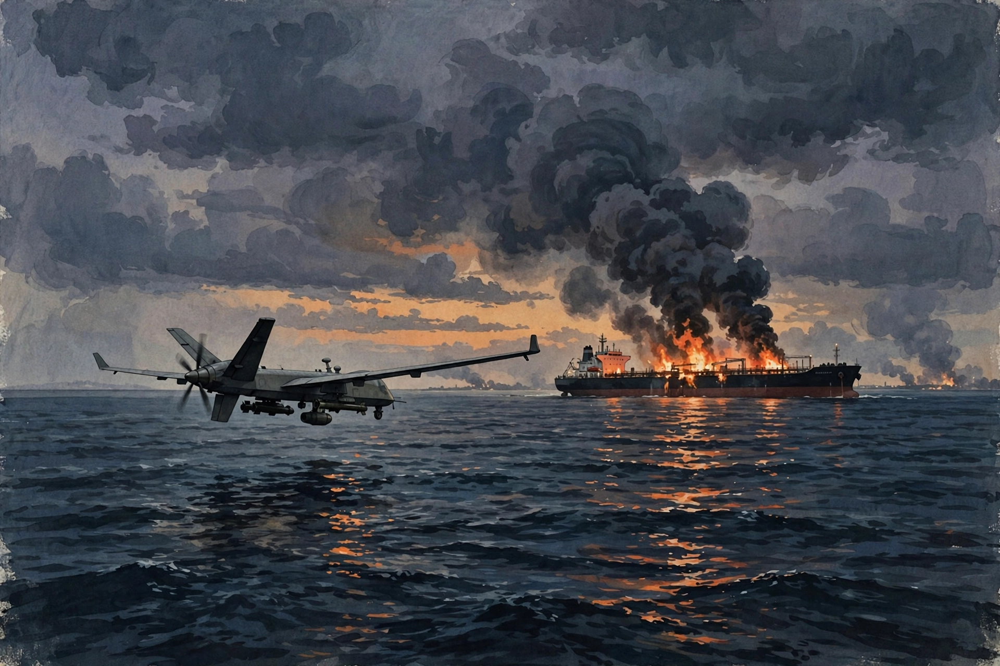

Washington proposes duties on China, the EU, Japan and 11 others over factory overcapacity — 20% for China, 15% caps for Europe and Japan. Markets fall; a hearing is set for 25 January.
Ballistic missiles strike a shopping centre and two buildings in Kyiv, wounding seven, after 113 drones overnight. Grain ships are hit near Odesa.
Israeli strikes killed 10 people in Gaza, the third straight night of attacks despite a year-old ceasefire.
Judges in the prime minister’s corruption trial recommend prosecutors drop the only bribery charge, saying a conviction is unlikely. No ruling yet; no charges dismissed.
Eurozone leaders pick former Bank of Spain head Pablo Hernández de Cos to succeed Christine Lagarde at the European Central Bank.
Leaders divide over budget spending and a $49 billion loan to Kyiv as the bloc’s summit strains over the cost of the war.
Egypt detains the driver suspected of causing the tanker crash that killed 31 on a highway outside Cairo.
Confirmed cases exceed 12,000 in the second-largest outbreak on record, as violence forces some responders to evacuate.
New York’s Macy’s Thanksgiving Day Parade is postponed for the first time in its 100-year history as a storm approaches; UK net migration falls to 77,000, the lowest since 1997; and North Korea’s Kim vows to build more nuclear weapons.